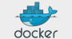
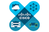
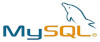
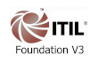
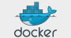
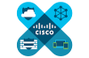
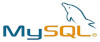
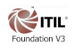

- Servidores físicos e virtuais/cloud computing IaaS - SaaS (VMWare | AWS | Azure | Contabo)
- Sistemas Operacionais Linux ( Red Hat, CentOS, Debian), Windows Servers e HP-UX
- Aderente a cultura DevOps (Ansible, Puppet, Docker, Jenkins, GIT, Rancher e etc.)
- Armazenamento fisico e virtual (storages HP e Dell, AWS S3, Azure storage)
- Rede: WAN, LAN/VLans (Roteadores Cisco, Switches Cisco e HP)
- Telefonia: Intelbras, Avaya, Siemens, Sistemas PABX em Nuvem
- Segurança de Perimetro ( UTM Firewall Fortinet, BlockBit, PFSense, Endian)
- Segurança Operacional (Politicas de acessos, proteção aos dados e informação)
- Disaster recovery e Continuidade do negocio, (backup e restore, Anti virus e SPAM)
- Monitoramento da operação (Zabbix, Check-MK, Nagios, Grafana)
- Atendimento/suporte em 2º e 3º níveis aos parceiros (internos e externos)
- Liderança técnica em crises/incidentes em ambientes de alta disponibilidade e criticidade
- Capacidade de articulação que envolvam escalonamentos e reuniões com fornecedores e áreas de negócio
- Senso de priorização de demandas concomitantes
- Disponibilidade para viagens,trabalho em horário não comercial, incluindo plantões aos finais de semana e feriados
- Perfil Hands-on, comunicativo, dinâmico, proativo e habilidade de auto aprendizado
- Excelente fluência verbal, inglês técnico avançado e espanhol básico
FORMAÇÃO ACADÊMICA Univ. Anhembi Morumbi - Graduação em Sist. de Informações CONTRIBUIÇÕES | Gerencia e Sustentação da operação local e cloud computing Liga Solidaria - Analista de Infraestrutura | Outubro/2019 até o momento. Principal apoio e contato da operação tecnológica, gerenciando, criando e sustentando os recursos de Data Center em cloud (Azure), físicos e virtuais (VMWare); Sustentação e melhorias do ambiente Iaas na plataforma cloud MS Azure (VM’s, Virtual Networks, Storage Accounts, VPN Connections, Kubernetes Services, Cost Management + Billing e mais; Garantia dos procedimentos e das políticas de segurança do ambiente implantado, entre outros processos, assim como foco na segurança da infraestrutura, rede e acessos a informação (Firewall PFSense) com regras de contenção e otimização dos recursos; Monitoramento, analise e correção de incidentes e/ou problemas do ambiente de missão critica com ferramentas Zabbix e Grafana; Configuração e sustentação de serviços Windows (AD, FS, DNS, DHCP, IIS, WSUS, Backup, entre outras aplicações) e Linux ( Apache, Nginx, MySQL, Bacula, entre outras aplicações); Rotinas de atendimento e suporte a clientes internos e externo; Wancorp - Analista de Redes e Infraestrutura | Dezembro/2018 a Setembro/2019 Gerenciamento de Servidores físicos e virtuais VMWare e Cloud AWS - IaaS (EC2, Container, S3, VPC, VPN, EKS, IAM, RDS, Route53, CloudWatch e mais); Configuração e sustentação de serviços Windows (AD, FS, DNS, DHCP, IIS, WSUS, Backup, entre outras aplicações) e Linux ( Apache, Nginx, MySQL, Bacula, entre outras aplicações); Análise e monitoramento da operação e segurança dos ambientes da infraestrutura, rede e acessos, visando conformidade com padrões de segurança e otimização dos recursos. Rotinas de atendimento e suporte a usuários e clientes. Tecnologias utilizadas: Cloud AWS, Contabo, UTM Firewall Fortinet e BlockBit, ProxMox, Ansible, Docker, Zabbix, Nagios e GLPi. Service Desk Brasil | Analista de Infraestrutura | Dezembro/2016 a Setembro/2018 Responsável pela infraestrutura de servidores dedicados e VPS via Contabo e OVH, provendo ambiente e/ou infraestrutura de missão crítica para serviços de redes, aplicações em produção e homologação, monitoramento, balanceamento de carga e segurança da informação. Criação e entrega de ambientes para o time de desenvolvimento, atendendo demandas de projetos. ( Docker, Docker Compose, Ansible, Jenkins). Administração de ferramentas Open Source para monitoramento de dispositivos e serviços (Zabbix e Nagios), controle de patrimônio de hardware e software (Fusion Inventory) e gerenciamento de chamados (GLPI). Coordenação e liderança da equipe de suporte técnico de infraestrutura de TI (analistas e assistentes, num total de 6 profissionais), nas tarefas de atendimento aos usuários. Tecnologias utilizadas: ProxMox, Ansible, Docker, Zabbix, Nagios e GLPi. Portal de Documentos S/A | Analista de Infraestrutura | Maio/2013 a Março/2016 Gestão e sustentação de Datacenter físico com a seguinte infraestrutura: - Servidores - totalizando de 52 maquinas, entre fisicos e virtuais (montados na plataforma VMWare (ESX e ESXi), num ambiente com Windows Server (2003,2008 e 2012), Linux (Red Hat, Ubuntu) e Unix (HP-UX). Co-colocation da operação critica (Banco de Dados e Aplicações) na CorpFlex (fisica) e cloud via AWS . - Storages - HP P2000 (6) e P4000(4), com discos de 600 GB, 900GB, 2 e 3 TB; - Rede – Gestão de rede incluindo configuração e monitoramento de switches (Vlans), roteadores, antenas e controladores wireless. Segurança de perímetro, utilizando ferramentas UTM firewall PFSense e Endian, politicas de backup (HP Data Protector), Anti Virus (Symantec) e Anti Spam (Trend Micro). Segurança da informação e controle - Politicas de acessos, MS-Active Directory, GPO, WSUS, SQUID. Criação e entrega de ambientes para o time de desenvolvimento, atendendo demandas de projetos. (VMWare). Rotinas de atendimento ao usuário interno e externo. Ind. Arteb S/A | Adm. de Redes | Outubro/2010 a Maio/2013 Gestão e sustentação de Datacenter físico com a seguinte infraestrutura: - Servidores - Parque HP Proliant do tipo Rack e Blade (C7000 e C3000), total de 35 maquinas, com S.O. Windows Server (2003,2008 e 2012), Linux (Red Hat, Ubuntu) e Unix (HP-UX); - Storages - HP P4000(2), com discos de 600 GB e 900GB. - Rede – Gestão de rede incluindo configuração e monitoramento de switches HP (Vlans), roteador Cisco (AS). Segurança de perímetro, utilizando ferramentas Firewall ASA Cisco, politicas de backup (HP Data Protector), Anti Virus (Symantec). Segurança da informação e controle - Politicas de acessos, MS-Active Directory, MS ISA Server, GPO, WSUS. Rotinas de atendimento ao usuário interno e externo. Industria Vedabras Ltda. | Adm. de Redes | Maio/2010 a Outubro/2010 Gestão e sustenção da infraestrutura de servidores Windows, banco de dados (MS-SQLServer), rede LAN/WAN (switches/roteadores), administração de Storage, backup/restore de dados (Symantec Backup-Exec, ArcServe e NT BACKUP e), Antivírus (Panda Anti virus); link de dados (MPLS e antenas WI_FI). Instalação, configuração e manutenção de AD, DHCP, DNS, WI-FI. Rotinas de atendimento ao usuário interno e externo. Santa Helena Ass. Médica S/A | Adm. de Redes | Janeiro/2008 a Maio/2010 Gestão e sustenção da infraestrutura de servidores wintel, banco de dados (SQL/Oracle), rede LAN/WAN (switches/roteadores), administração de Storage, backup/restore de dados (Symantec Backup-Exec, ArcServe e NT BACKUP e), Antivírus (Symantec End-Point); link de dados (MPLS e antenas WI_FI). Instalação, configuração e manutenção de AD, DHCP, DNS, WI-FI. Controle de licenças de software e ativos; (ferramentas OCS, Zabbix e 0800net) Corresponsável pelos projetos de infraestrutura de redes e equipamentos. Administração de contratos de fornecimento de serviços, desenvolvimento de propostas técnicas / financeiras de infraestrutura de TI (custos e descritivo técnico); Elaboração de propostas e topologias com soluções para solução de problemas/plano de melhorias. Rotinas de atendimento ao usuário interno e externo. Lobtec Tec. de Sistemas Ltda | Analista de Suporte Pleno | Maio/2007 a Dezembro/2007 Suporte e treinamento ao usuario dos sistemas de segurança (Ronda Sênior Sistemas). Apoio na implantação de Sistemas de segurança (Ronda Sênior Sistemas). Cia. Transamerica de Hoteis | Técnico Informática| Março/2007 a Maio/2007 Suporte de informatica ao usuário interno e externo. Check list de tarefas de Backup/Restore. IDIOMAS Inglês Leitura: Avançado | Escrita: Avançado | Fala: Médio Espanhol Leitura: Avançado | Escrita: Médio | Fala: Iniciante INFORMAÇÕES COMPLEMENTARES Cursos Infra Agil | DevOps (Docker, Ansible, Puppet, Jenkins, Rundeck, GIT) – 4Linux – 2018. EXIN Cloud Computing – Trainning – Certificado/2015. ITIL Foundation V3 – TI Exames – Certificado/2014. Linux LPI 101-102 - Concluído/2010